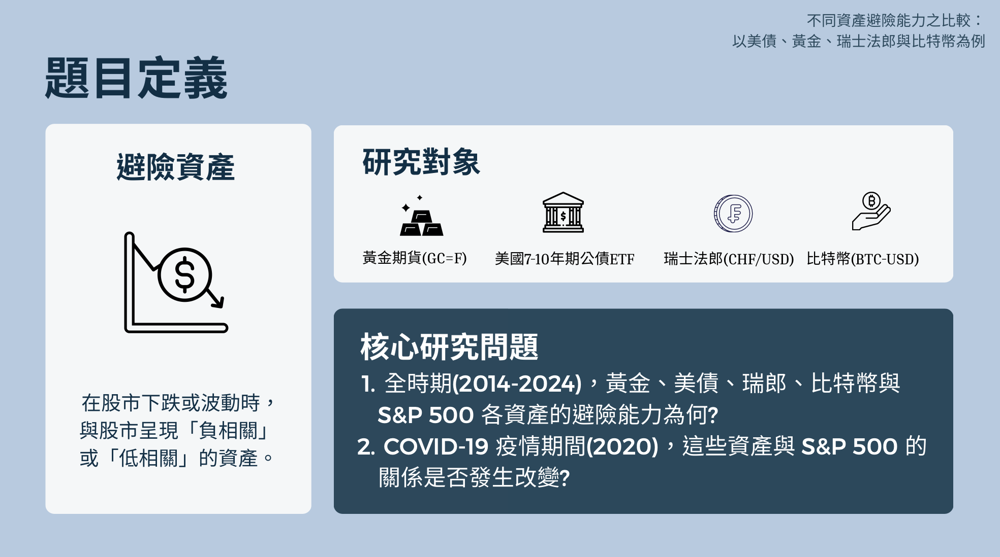
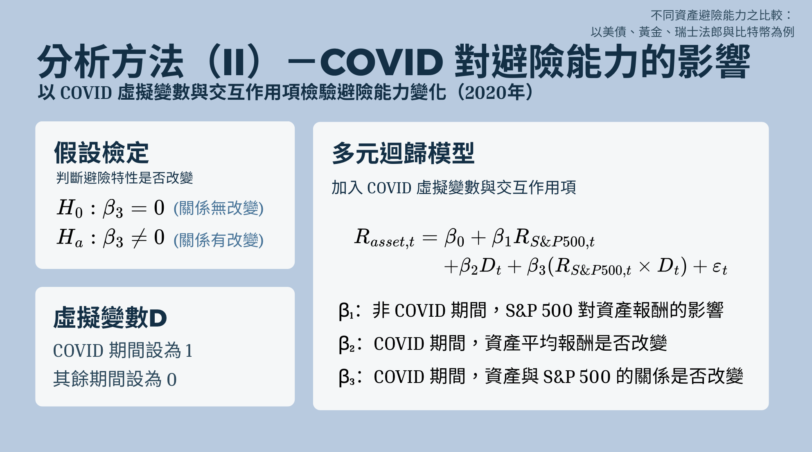
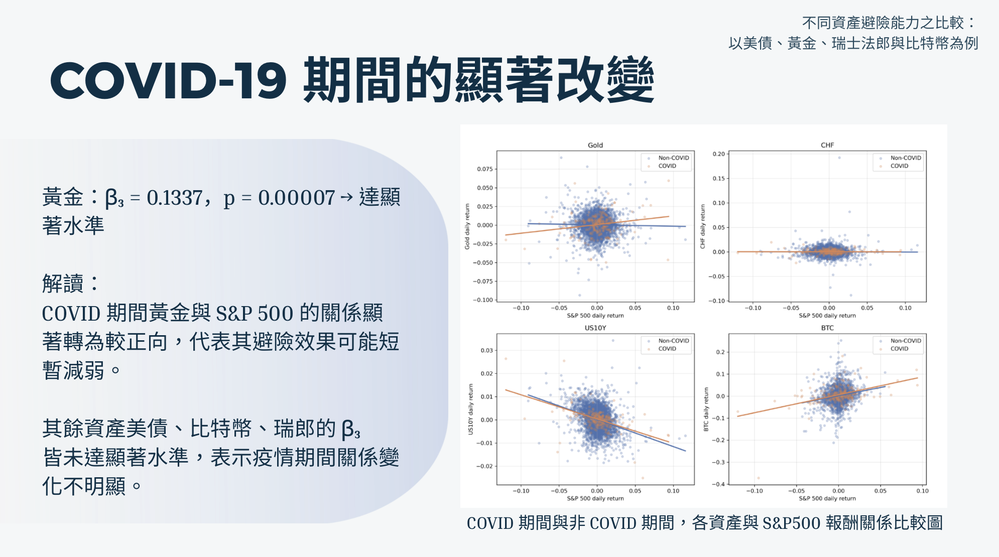

P03 / 統計學團隊研究
金融資產避險能力實證分析
以 S&P 500 為基準，比較黃金、美債 ETF、瑞士法郎及比特幣的報酬關係，使用相關分析與危機期間交互作用模型檢視避險特性。
我的角色資料處理、統計分析與視覺化
期間2025.09–2026.06

四類資產在 COVID 與非 COVID 期間的報酬關係。
01
問題
資產在一般時期的低相關，不一定能延續到市場危機。我們研究四類資產與股票市場的歷史報酬關係，並檢驗 COVID 期間的線性關係是否改變。
02
我的貢獻
我參與金融資料蒐集與整理、報酬率計算、統計模型實作及視覺化。研究問題與結論由團隊共同討論；這個案例著重我把資料轉成可檢視分析流程的工作。
03
方法
先整理共同交易日期與日報酬率，觀察相關係數與散佈圖，再建立 OLS 模型。第二組模型加入 COVID 虛擬變數與市場報酬交互作用，區分平均位移與斜率變化。分析同時閱讀係數、p 值與 R²，而不是只看迴歸線方向。
04
結果
在課程報告的樣本設定下，美債 ETF 在四項資產中呈現最明顯的負向相關；比特幣則與股市呈正向相關。黃金的 COVID 交互作用項達統計顯著，瑞士法郎與市場的線性相關則接近零。這些結果顯示，資產關係需要連同市場期間與模型設定解讀。
報告採 2014–2024 年資料，並以 2020 年為 COVID 期間；repository 的樣本窗口與程式版本有所差異，尚未核對同版資料。本研究未驗證交易策略績效，歷史相關與迴歸不代表因果或未來避險保證。
原圖 US10Y 為專案對 7–10 年期美債 ETF（IEF）的代稱，並非殖利率。
SELECTED EVIDENCE
精選簡報與 Demo





